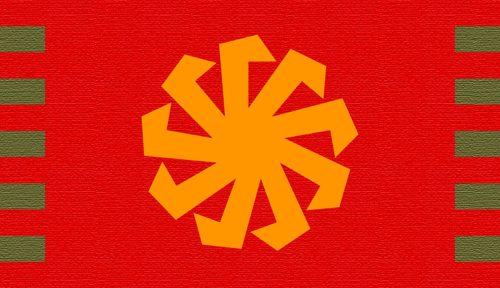

- Դավիթ Միրզոյան
-
Անձնական կայք
- այստեղ զետեղված են Դավիթ Միրզոյանի գրքերն ու արվեստի գործերը
-
Գրքեր
- «Վերածնունդ» վեպը 2 հատորով և «Հոդվածներ Ակնարկներ Աֆորիզմներ» ժողովածուն՝ անվճար
ներբեռնման հնարավորությամբ
-
Հոդվածներ և ակնարկներ
- հոդվածների և ակնարկների ամբողջական ժողովածուն
-
Ֆեյսբուքյան էջ
- Դավիթ Միրզոյանի անձնական էջը։
-
Յութուբյան ուղիղ եթերներ
- եթերները տեղի են ունենում ամեն օր՝ երեկոյան
- Այլ հղումներ
-
Qurkik Jalali TV
- Կարեն Մսրյանի հեղինակած խումբը. ներկայացնում է միապետության և ազգային ուսմունքի
գաղափարները՝ կարճ հոլովակների տեսքով
-
Հայաստանի Թագավորություն
- ֆեյսբուքյան էջը նախատեսված է միապետության և ազգային ուսմունքի
գաղափարները ներկայացնելու համար
-
Telegram ալիք
- նախատեսված է միապետության գաղափարներն ամբողջությամբ ընդունող համախոհների համար